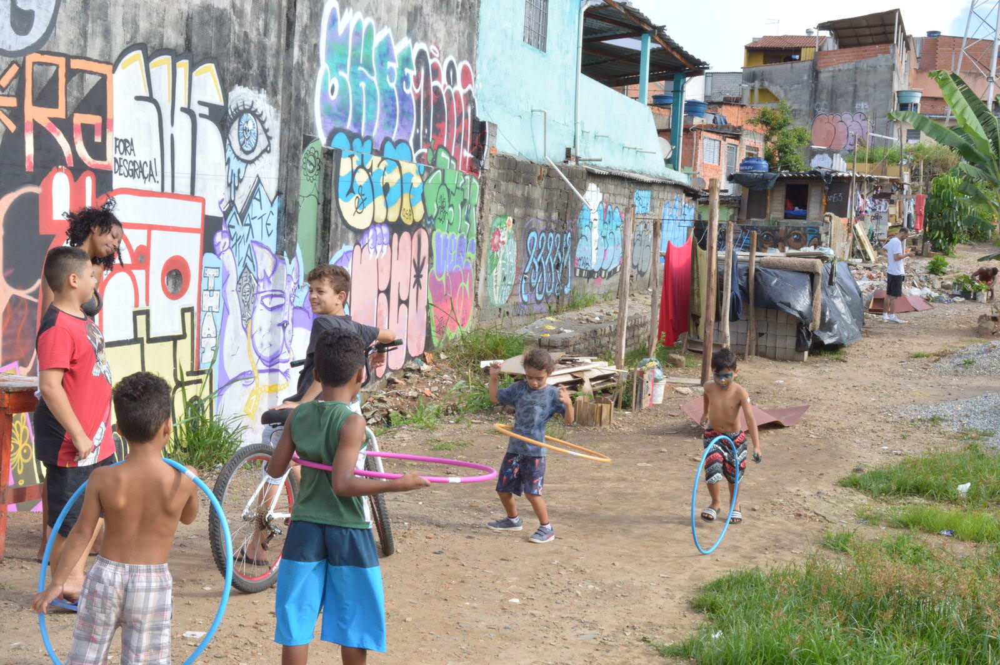

Desafios e superações: O protagonismo dos coletivos independentes de arte-educação na periferia de São Paulo
Os coletivos independentes de arte-educação desempenham um papel fundamental na transformação social e cultural das periferias de São Paulo. Porém, o caminho trilhado por esses coletivos não é isento de desafios. Neste artigo, exploraremos os obstáculos enfrentados por essas iniciativas e como elas têm encontrado maneiras criativas de superá-los, consolidando seu protagonismo na cena artística e educacional local.
Nesse contexto, os coletivos têm buscado alternativas criativas, como ocupações temporárias, intervenções urbanas e parcerias com espaços alternativos, visando democratizar o acesso à arte e educação nas periferias.
Captação de recursos:
Um dos principais desafios enfrentados pelos coletivos independentes é a captação de recursos financeiros para a realização de seus projetos. Muitas vezes, essas iniciativas contam com recursos limitados e dependem de doações, patrocínios ou editais públicos para viabilizar suas atividades. A busca por fontes de financiamento estável e sustentável é um desafio constante, exigindo estratégias de gestão e articulação com parceiros e apoiadores.
Formação de parcerias estratégicas:
Para fortalecer suas ações e ampliar seu alcance, os coletivos independentes buscam parcerias estratégicas com organizações, empresas e instituições locais. Essas parcerias podem proporcionar acesso a recursos, espaços e expertise, além de possibilitar a realização de projetos conjuntos. No entanto, estabelecer e manter parcerias demanda tempo, diálogo e negociação, sendo necessário encontrar alinhamentos de valores e interesses.
Reconhecimento institucional:
Outro desafio enfrentado pelos coletivos independentes é o reconhecimento institucional de seu trabalho. A obtenção de apoio e reconhecimento por parte de órgãos governamentais, instituições culturais e educacionais é fundamental para a sustentabilidade e visibilidade dessas iniciativas. A luta por reconhecimento demanda esforços de advocacy, articulação política e a construção de uma rede de apoio que valorize e legitime o trabalho desenvolvido pelos coletivos.
Acesso a espaços de arte e cultura:
Os coletivos independentes muitas vezes enfrentam obstáculos para acessar espaços de arte e cultura consolidados. A falta de infraestrutura adequada, a burocracia e os custos envolvidos podem dificultar o uso desses espaços para a realização de eventos, exposições e atividades artísticas. Nesse contexto, os coletivos têm buscado alternativas criativas, como ocupações temporárias, intervenções urbanas e parcerias com espaços alternativos, visando democratizar o acesso à arte e educação nas periferias.
Conclusão
Os coletivos independentes de arte-educação na periferia de São Paulo enfrentam desafios significativos em sua jornada, mas têm demonstrado uma notável capacidade de superação. Com criatividade, resiliência e engajamento comunitário, esses coletivos têm encontrado maneiras de contornar obstáculos, consolidando seu protagonismo na cena artística e educacional. É fundamental reconhecer e apoiar essas iniciativas, valorizando sua contribuição para a transformação social, o empoderamento da comunidade e a promoção da